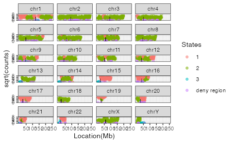
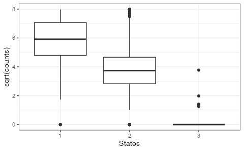
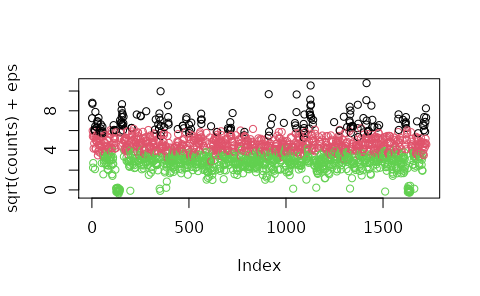
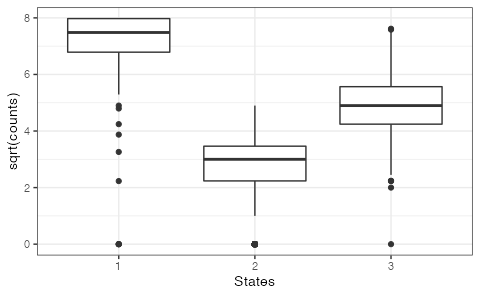
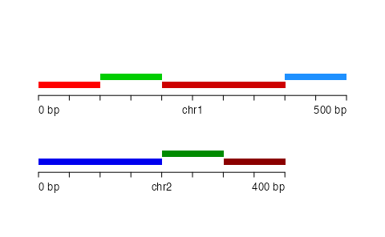
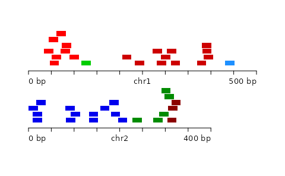

vignettes/segmented_boot_ranges.Rmd
segmented_boot_ranges.Rmdcite Bickel et al…
Options:
First we obtain the Ensembl genes …
library(EnsDb.Hsapiens.v86)## Loading required package: ensembldb## Loading required package: BiocGenerics## Loading required package: parallel##
## Attaching package: 'BiocGenerics'## The following objects are masked from 'package:parallel':
##
## clusterApply, clusterApplyLB, clusterCall, clusterEvalQ,
## clusterExport, clusterMap, parApply, parCapply, parLapply,
## parLapplyLB, parRapply, parSapply, parSapplyLB## The following objects are masked from 'package:stats':
##
## IQR, mad, sd, var, xtabs## The following objects are masked from 'package:base':
##
## anyDuplicated, append, as.data.frame, basename, cbind, colnames,
## dirname, do.call, duplicated, eval, evalq, Filter, Find, get, grep,
## grepl, intersect, is.unsorted, lapply, Map, mapply, match, mget,
## order, paste, pmax, pmax.int, pmin, pmin.int, Position, rank,
## rbind, Reduce, rownames, sapply, setdiff, sort, table, tapply,
## union, unique, unsplit, which.max, which.min## Loading required package: GenomicRanges## Loading required package: stats4## Loading required package: S4Vectors##
## Attaching package: 'S4Vectors'## The following object is masked from 'package:base':
##
## expand.grid## Loading required package: IRanges## Loading required package: GenomeInfoDb## Loading required package: GenomicFeatures## Loading required package: AnnotationDbi## Loading required package: Biobase## Welcome to Bioconductor
##
## Vignettes contain introductory material; view with
## 'browseVignettes()'. To cite Bioconductor, see
## 'citation("Biobase")', and for packages 'citation("pkgname")'.## Loading required package: AnnotationFilter##
## Attaching package: 'ensembldb'## The following object is masked from 'package:stats':
##
## filter
edb <- EnsDb.Hsapiens.v86
filt <- AnnotationFilterList(GeneIdFilter("ENSG", "startsWith"))
g <- genes(edb, filter = filt)
library(GenomeInfoDb)
g <- keepStandardChromosomes(g, pruning.mode = "coarse")
seqlevelsStyle(g) <- "UCSC"
g <- sort(g)
g <- keepSeqlevels(g, paste0("chr",seq_len(9)), pruning.mode = "coarse")Deny regions … cite Kundaje
## GRanges object with 910 ranges and 0 metadata columns:
## seqnames ranges strand
## <Rle> <IRanges> <Rle>
## [1] chr1 628904-635104 *
## [2] chr1 5850088-5850571 *
## [3] chr1 8909611-8910014 *
## [4] chr1 9574581-9574997 *
## [5] chr1 32043824-32044203 *
## ... ... ... ...
## [906] chrY 11290798-11334278 *
## [907] chrY 11493054-11592850 *
## [908] chrY 11671015-11671046 *
## [909] chrY 11721529-11749472 *
## [910] chrY 56694633-56889743 *
## -------
## seqinfo: 24 sequences from hg38 genome; no seqlengths
library(nullranges)
library(plyranges)##
## Attaching package: 'plyranges'## The following objects are masked from 'package:ensembldb':
##
## filter, select## The following object is masked from 'package:AnnotationDbi':
##
## select## The following object is masked from 'package:IRanges':
##
## slice## The following object is masked from 'package:stats':
##
## filterWe subset the deny ranges to those which are 500 bp or larger.
cite: DNAcopy paper
deny2 <- deny %>% filter(width(deny) >= 500)
L_s <- 1e6
seg <- segment_density(g, n = 3, L_s = L_s,
deny = deny2, type = "cbs",
boxplot = TRUE)## Analyzing: Sample.1
cite: RcppHMM
seg_hmm <- segment_density(g, n = 3, L_s = L_s,
deny = deny2, type = "hmm",
boxplot = TRUE)## Finished at Iteration: 27 with Error: 9.0571e-06
Here we apply a segmented block bootstrap with blocks of size 500kb, to the genes…
Test on 100 times bootstrap ~17s
L_b <- 5e5
system.time({
res_wochr <- seg_bootstrap_granges(seg, gr, L_b, R = 100,
within_chrom = FALSE, proportion_length = FALSE,
coarse = TRUE)
})
system.time({
res_wochr_propl <- seg_bootstrap_granges(seg, gr, L_b, R = 100,
within_chrom = FALSE, coarse = TRUE)
})
system.time({
res_wchr <- seg_bootstrap_granges(seg, gr, L_b, R = 100,
within_chrom = TRUE, proportion_length = FALSE,
coarse = TRUE)
})
system.time({
res_wchr <- seg_bootstrap_granges(seg, gr, L_b, R = 100,
within_chrom = TRUE, proportion_length = TRUE,
coarse = TRUE)
})TODO: this may not be ideal for the vignette, but better for a paper
Ls <- c(1e5, 1e6, 5e6)
L_b <- c(5e4, 5e5, 1e6)
mapply(function(Ls, L_b) {
seg <- segment_density(g1, n = 3, Ls = Ls, type = "CBS", plot_origin = TRUE)
seg_length <- seg %>%
group_by(state) %>%
summarise(Ls = sum(width)) # derive each states length
L_c <- seqlengths(g1)["9"]
L_s <- seg_length$Ls
system.time(res <- seg_bootstrap_iranges(seg, g1, L_c, L_s, L_b))[[3]]
res <- do.call(c, res)
res <- sort(res)
CBS_boot <- GRanges(seqnames = "9", ranges = res, seqlengths = L_c)
counts_cbs_boot <- countOverlaps(query, CBS_boot)
eps <- rnorm(length(counts_cbs_boot), 0, .2)
print(hist(counts_cbs_boot, breaks = 50, xlab = paste(Ls, "with", L_b, "block size")))
print(plot(sqrt(counts_cbs_boot) + eps))
}, Ls, L_b)Toy example for evaluating segmented block bootstrap…
suppressPackageStartupMessages(library(BentoBox))
plotGRanges <- function(gr) {
bb_pageCreate(width = 5, height = 2, xgrid = 0,
ygrid = 0, showGuides = FALSE)
for (i in seq_along(seqlevels(gr))) {
chrom <- seqlevels(gr)[i]
chromend <- seqlengths(gr)[[chrom]]
suppressMessages({
p <- bb_params(chromstart = 0, chromend = chromend,
x = 0.5, width = 4*chromend/500, height = 0.6,
at = seq(0, chromend, 50),
fill = cols)
pbed <- bb_plotBed(data = gr, params = p,
chrom = chrom,
y = 0.6 + (i-1),
just = c("left", "bottom"),
colorby=colorby("state_col"))
bb_annoGenomeLabel(plot = pbed, params = p, y = 0.7 + (i-1))
})
}
}
library(GenomicRanges)
seq_nms <- rep(c("chr1","chr2"), c(4,3))
seg <- GRanges(
seqnames = seq_nms,
IRanges(start = c(1, 101, 201, 401, 1, 201, 301),
width = c(100, 100, 200, 100, 200, 100, 100)),
seqlengths=c(chr1=500,chr2=400),
state = c(1,2,1,3,3,2,1),
state_col = c(1,2,4,3,6,5,7)
)
cols <- c("red","green3","dodgerblue",
"red3","green4","blue2",
"darkred")
plotGRanges(seg)
n <- 50
gr <- GRanges(
seqnames=sort(sample(c("chr1","chr2"), n, TRUE)),
IRanges(start=round(runif(n, 1, 500-20+1)), width=20)
)
suppressWarnings({
seqlengths(gr) <- seqlengths(seg)
})
gr <- gr[!(seqnames(gr) == "chr2" & end(gr) > 400)]
gr <- sort(gr)
idx <- findOverlaps(gr, seg, select="first")
gr$state <- seg$state[idx]
gr$state_col <- seg$state_col[idx]
plotGRanges(gr)
gr_prime <- nullranges::seg_bootstrap_granges(seg, gr, L_b=100, R=1)[[1]]
# plotGRanges(gr_prime)